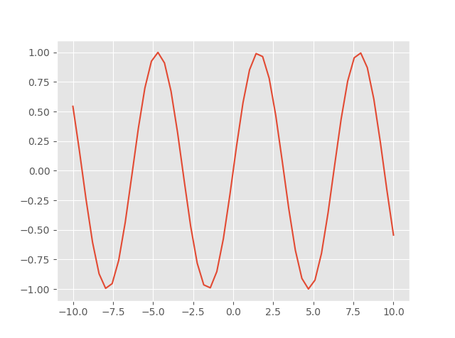
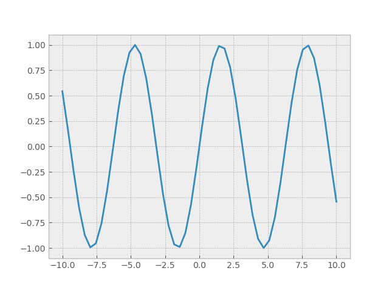
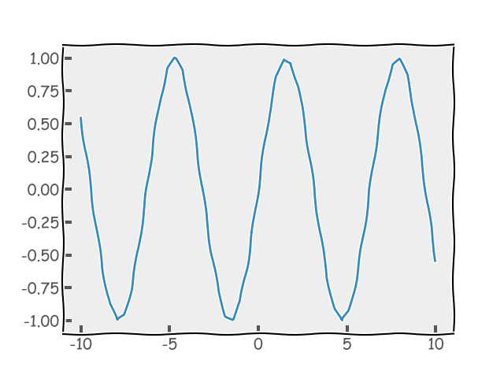

# 查看多少风格
import matplotlib.pyplot as plt | |
import numpy as np | |
print(plt.style.available) |
# 单个风格
x = np.linspace(-10, 10) | |
y = np.sin(x) | |
plt.style.use('ggplot') # 使用风格步骤一定要在画图前面，最好在一开始就设置好. | |
plt.plot(x, y) | |
plt.show() |

# 混合风格
x = np.linspace(-10, 10) | |
y = np.sin(x) | |
plt.style.use(['ggplot', 'bmh']) # 使用风格步骤一定要在画图前面，最好在一开始就设置好. | |
plt.plot(x, y) | |
plt.show() |

# 歪歪扭扭风格
x = np.linspace(-10, 10) | |
y = np.sin(x) | |
plt.xkcd() | |
plt.plot(x, y) | |
plt.show() |
